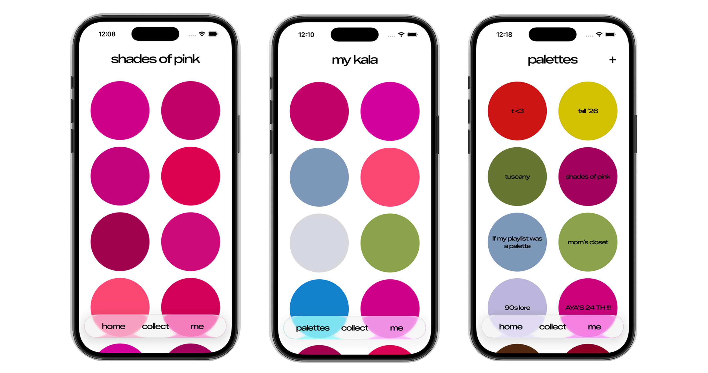
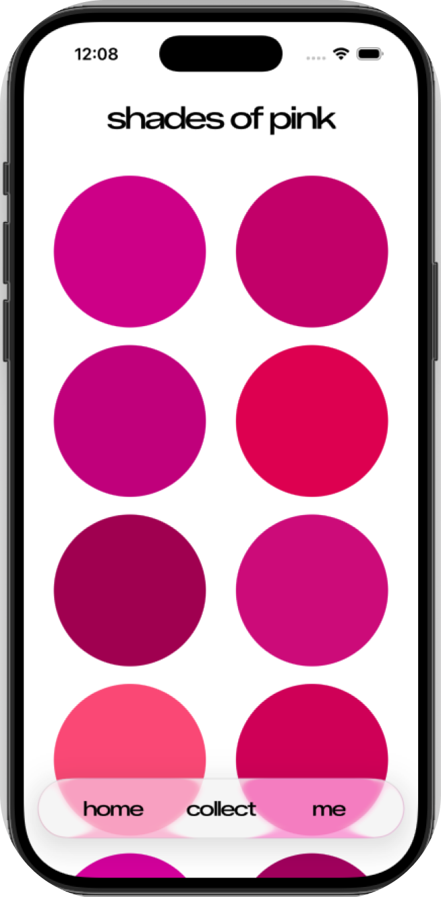
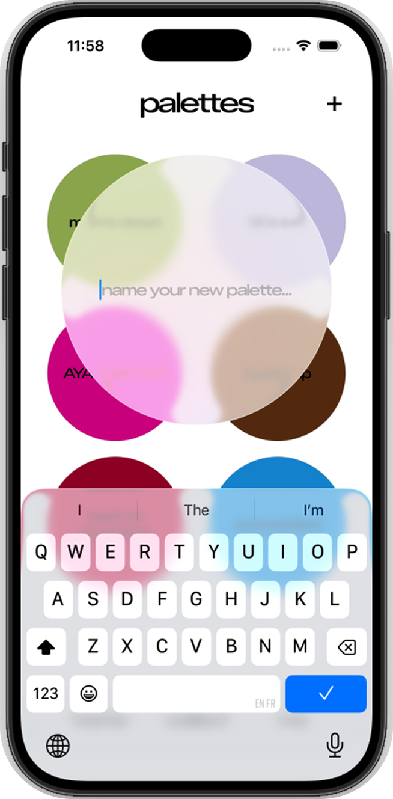
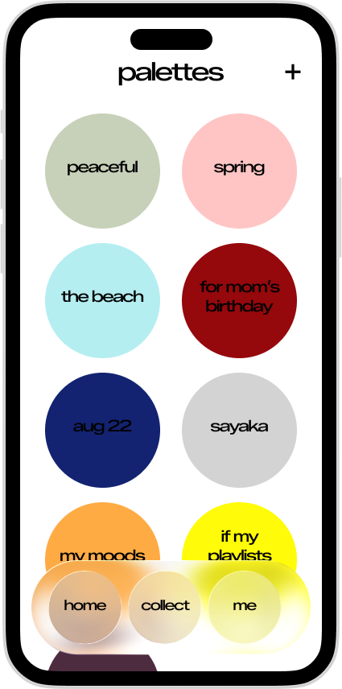
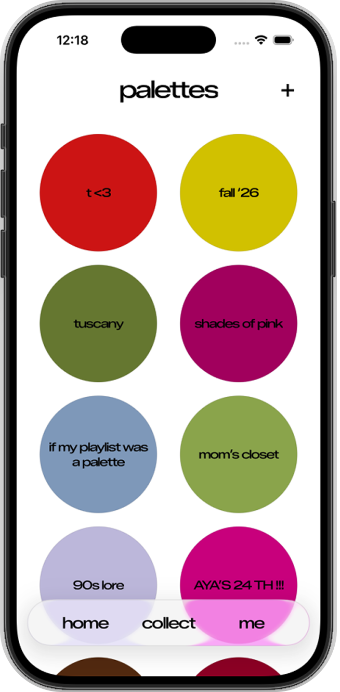
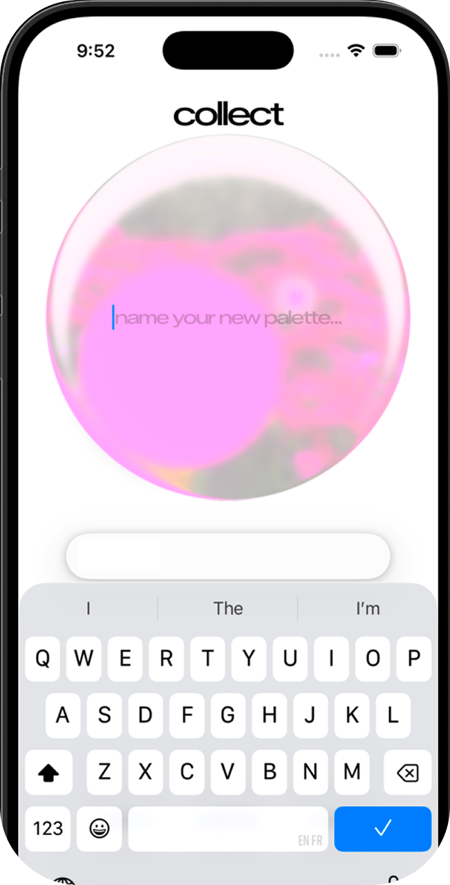
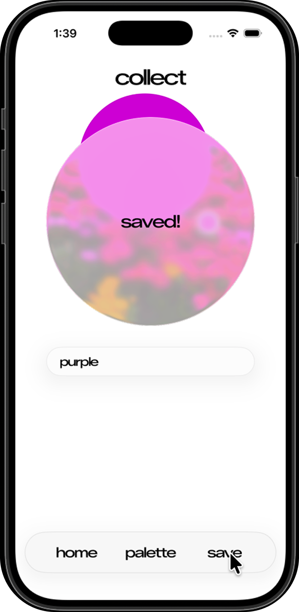

Personal Project
kala
An iOS app for saving colors and the memories associated with them.

TL;DR
Problem
I wanted to take a UI I designed in Figma all the way to a shipped iOS app — not stop at a static prototype.
Why it's a problem
A polished Figma file hides the platform's constraints: effects and interactions that look right in design often can't be reproduced on iOS. Which parts of a design are essential, and which have to adapt, only becomes clear once you actually build it.
Solution
I designed kala in Figma and built it in SwiftUI, using Claude Code to assist implementation while I made the design decisions. Wherever iOS couldn't match the prototype, I adapted the design deliberately and shipped a working app.
01 — The Idea
The idea for kala came from the way certain colors can unexpectedly bring back memories.
Growing up, at my family home, there was a colorful, large-patterned carpet. I also remember the vivid colors of children's books by Brian Wildsmith that I read when I was young.
These experiences made me think about how a particular color / combination of colors can become associated with memories.
This led to a simple question:
What if you could save a memory together with the color that reminds you of it?
kala allows users to select a color from a photograph and attach a short note to it. It enables them to build a personal collection of colors and memories over time.
02 — Design Direction
Circular swatches
Saved colors are represented as circular swatches. The shape is consistent throughout the app, allowing collections of colors to be saved like a visual archive. I wanted to make browsing to feel enjoyable.
Glass UI
I used translucent glass elements for navigation. The intention was to allow interface elements to sit above photographs without completely obscuring the content underneath.
Typography
The goal for kala was to have a recognizable personality. Instead of relying on frequently used typefaces such as Inter or Roboto, I selected more distinctive typography and intentionally tightened the letter spacing.


03 — Core Interaction
Users can create a new palette or swatch from the collect screen or by tapping + in the palette screen.
01: Select a photo
The user chooses a photo from their library.
02: Pick a color
The user taps on the photo to select a color.
03: Add a memory
A short note can be attached.
04: Save
The color and its associated memory are saved together.
04 — From Figma to iOS
Translating the glass UI into a real product
One of the biggest challenges was translating the glass UI from the Figma prototype into a functioning iOS interface. During implementation, I found that the glass effect I set on Figma could not be translated on the app because of the iOS constraints. Although I first tested a translucent white and light gray instead of glass UI, this changed the visual relationship between the UI and the underlying content too much. Instead of forcing the implementation to match the Figma prototype exactly, I reconsidered which aspects of the original design were essential. I reduced the size of the navigation bar and removed the overlapping glass layers.
The final implementation therefore differs from the original prototype, but it still makes the photo and color stand out while maintaining a lightweight interaction layer.
Design takeaway
A design is not finished when it looks right in Figma. It needs to work within the constraints of the platform it is designed for. It is knowing which parts of the design are essential to the experience and which can be adapted.


05 — Working with AI During Implementation
One recurring challenge while using Claude Code to translate the Figma design into an app was maintaining the original design.
For example, the selected photo and its overlay were aligned in Figma, but initially rendered with a offset in the simulator.
I compared the implementation against the original design, and iterated on the implementation until the intended design was obtained.
This process highlighted an important distinction that although AI can accelerate implementation, it does not eliminate the need for design judgment.


06 — Reflection
The biggest lesson was that designing for a platform is different from designing a static interface.
Some effects in Figma could not be reproduced in iOS. Rather than treating those limitations as technical problems, I had to reconsider the design and decide what needed to be kept.
I also learned that AI-assisted development works best as an iterative process. The implementation could be generated quickly, but evaluating the result still required human judgment.
What I would do next
So far, the product concept and visual language have primarily been evaluated through my own perspective. I would want to test whether people actually find collecting colors and attaching memories to them meaningful and enjoyable.
That would help determine which parts of the experience are genuinely useful, rather than simply visually appealing.